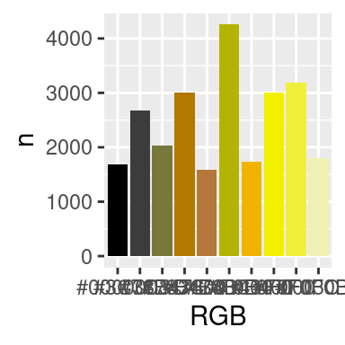

temperatura <- function(R,G,B){
## definir el neutro e interceptar
# esta es la parte dificil y es heurística
# investigar la función "cut"
R1 <- round(R)
G2 <- round(G)
B2 <- round(B)
if(R2==G2 & G2==B2 ) return ("Neutro")
# Esto es lo sencillo
if(R > G & R > B) return("Cálido")
if(R < G & R < B) return("Frío")
}Color calido vs Frio
Problema
¿Cuál es la definición de un color cálido vs frio vs neutro?
Solución
Para tratarlo matemáticamente necesitamos una formula que incluya los términos R, G y B, posiblemente con interacciones.
Definición
En términos de R G B
Cálidos: R > G y R > B
Fríos: B > R y B > G
Neutros: R ≈ G ≈ B
Formula:
\[ temperatura \sim \beta_0 + \beta_1R + \beta_2G+\beta_3B + \epsilon \]
En este escenario la temperatura se define así:
-1 : frío
0: Neutro
1: Cálido
Decidir heurísticamente cual es el punto de corte: p.e.: neutro puede ser -0.2 a 0.2 o -0.2 a 0.25
Alternativa
Una función hecha heuristícamente de la forma:
Función cut
vec_col <-c(255,40,128,129,100)
cut(vec_col, breaks = c(0,100,300), labels = c("poco","mucho")) |> table()
poco mucho
2 3 Usar condicionales:
clasificar_intensidad <- function(C){
purrr::map(C,~{
if(.x<85) return ("poco")
if(.x>=85 & .x<170 ) return ("mediano")
return ("alto")
}) %>% unlist()
}
vec_col |> clasificar_intensidad()[1] "alto" "poco" "mediano" "mediano" "mediano"AD_Seremix<- image_read("ADs/seremix.jpg")
esquema_de_color_df(AD_Seremix, accuracy = 60) %>%
arrange(desc(n)) %>%
head(10) -> tmp_df my_color_codes <- tmp_df$RGB %>% unique
names(my_color_codes) <- my_color_codes
tmp_df %>%
ggplot(aes(x=RGB,y=n,fill=RGB))+
geom_col()+
scale_fill_manual(values = my_color_codes)+
theme(legend.position = "none")